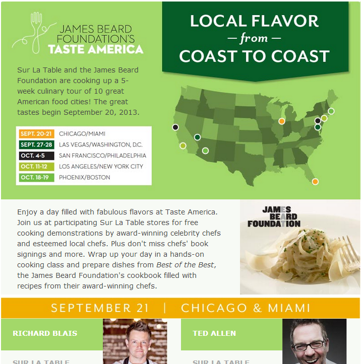
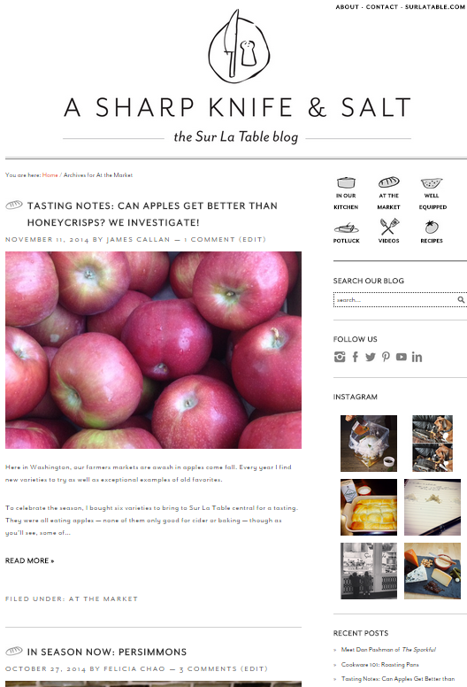

Alex Marcus
Digital Digger & Team Leader
Digital Digger & Team Leader
I am a Software Development Team Lead at Level 11, working to join the worlds of programming and design into robust, intuitive, and cutting edge user interfaces.
Since earning my degree in computer science and art, I’ve honed both skills in a number of web and software development roles across the United States. With that knowledge I have started and led a number of successful development teams.
I live in Bremerton, WA with my partner Chelsea and dog Bartleby. Together we explore the wilds of the Pacific Northwest and beyond.


While a student at Connecticut College, and for a few months after graduation, I functioned as the assistant network administrator for the college. This position allowed me to gain a great number of skills: physical and virtual network repair, hardware maintenance, network switch administration, and wireless network configuration and maintenance.
I was responsible for resolving campus wide network outages, and helped to develop tools for monitoring and resolving these issues. When an issue could not be resolved via software, I repaired various network hardware, such as switches, ports, and hubs, on my own.
During my time as the Student Network Administrator, I gained a great appreciation and understanding of how a large network is constructed and maintained, as well as a lasting ability to deliver first-hand technical assistance to users of all skill levels. In addition to my ongoing network maintenance work, I contributed to several campus system improvement projects.
Once the Connecticut College email system had been converted to Gmail, they needed a method to keep the users’ Active Directory passwords synced with their Gmail passwords. So, utilizing the LDAP protocol and Google’s API, I designed and implemented a web-based solution which allowed one page to simultaneously update each of these systems’ passwords. This system was used by the ConnColl IT department for years to smoothly transfer the population to the new mail system and solve any password issues that arose.
When Connecticut College switched its 4,000+ active email users to Gmail, the accounts needed to be converted to the new system. I wrote a script, utilizing LDAP protocol, XML, cURL, and Google’s API to accomplish this. The script authenticated the administrative user, accessed Conn’s LDAP server, copied the username/password of all student accounts, and finally added all users to Gmail’s global address book for student use. This script was successfully utilized in the conversion process and resulted in complete data transfer between the two databases.

During a Programming Languages course at Connecticut College, I was challenged to create a shoreline wave simulation in the language of my choosing. I was interested in delving further into the world of web development, I chose JavaScript. This was my first utilization the HTML5 canvas tag with JavaScript to create live animations, and I enjoyed it thoroughly.
The code for this project is available here. Feel free to give it a try below!

Humans vs. Zombies (HvZ) is a game of moderated tag played at schools, camps, neighborhoods, military bases, and conventions across the world. Human players must remain vigilant and defend themselves with socks and dart blasters to avoid being tagged by a growing zombie horde.
I was responsible for the continuation and administration of Humans Vs. Zombies games at Connecticut College, and I also contributed to the game’s core codebase as an outside developer. When the HvZ site still ran on a backbone of PHP, I developed a Twitter API integration to allow constant game updates to be triggered by in-game events and delivered to the micro-blogging service. Additionally, I updated HvZ’s administrative backend to allow more efficient rule alteration and player generation.
Through my participation and contributions I made great connections in the HvZ community, both within my school and outside of it.

FireEye is a US network security company that specializes in advanced protection against a variety of cyber threats. Their main software line consists of the Malware Protection System for web security, email security, file security, and malware analysis.
During a research seminar at Connecticut College, I turned to the world of network security with special attention paid to how malware infects networks. With the help of a mentor from FireEye, I was able to install, administrate, and utilize their malware detection software on the Connecticut College campus network.
With this tool at my disposal, I viewed and collected data on the number of cyber threats in the college’s network ecosystem at any given time. Using that information I was able to provide the Information Technology department with recommendations of anti-malware options for students, campus computer patches, and opportunities for increased firewall effectiveness. I presented my findings to the Computer Science department in a public seminar on network security.

Flownet is a Unix-based redundant backup system, which I developed during a Computer Science Research Seminars at Connecticut College. It was an experiment in Unix operating systems, Bash commands, backup application development, network design, and automation.
Flownet consists of two shell scripts, one for configuration and the other containing the main functionality. Once the server and folder locations are set via the configuration script, Flownet will automatically connect to the designated servers and perform the designated action, either backing up or restoring the connected server.
The result, when correctly installed on multiple systems, is a network of self-sufficient servers capable of backing up and restoring each other. The implementation takes advantage of key Unix commands such as SCP and rsync.
The final code for Flownet, as well as the Powerpoint presentation I delivered to the Connecticut College Computer Science department, are available via GitHub.

ChatDev is a chat protocol and command line client for sending text communications, written in Python. I coded ChatDev for my second semester of Computer Science Research Seminar at Connecticut College. During this research period, I took an in-depth at how chat protocols, specifically XMPP, facilitate communication between users by utilizing socket connections, a centralized multithread server, and peer-to-peer messaging.
The multi-threaded server receives connections from clients, and stores their information in a database containing the users’ profile. Then it regularly checks the users’ presence, and updates online users with a list of online clients.
The multi-threaded client sends login data to the server, indicating its online presence. It then waits to receive data from other clients, or send data to other clients, via a P2P interface. The client software utilizes a command line-style UI.
The ChatDev code is available via GitHub at https://github.com/optimarcusprime/ChatDev.

This website has undergone many changes since its first version in late 2010. Each iteration has reflected my knowledge of web development and my expanding toolset. I enjoy keeping the old versions online for nostalgia and to reflect how far I’ve come.
AlexMarc.us v1.0 began as an experiment in the boundaries of web browsing. It was created as the final project of my design independent study at Connecticut College.
Here is an excerpt from my original statement about the design:
AlexMarc.us uses a combination of sophisticated CSS and Javascript techniques to display HTML content on a massive horizontal and vertical plane with smooth navigation features. A quick Google search will find you with posts about various sites with especially good horizontal or vertical layouts, but none which encompass both possibilities. This is where the ingenuity of my new design shines.
By employing both dimensions into my page I allow for fast load times, good search engine caching, and intricate layout options. There is a multitude of modules which can be easily and quickly applied to my page, such as minimap navigation, advanced scrolling recognition applications, social networking integration, blogs, etc. The possibilities are endless, like the canvas that I’m crafting it on._
v1.0 has been reproduced here, but note that the information there is largely out-of-date and some sections have been removed.
The second version of AlexMarc.us was a major shift from v1.0, both in its design and layout. Pulling back from the experimental and theoretically endless expanse of pixels in v1.0, I created a minimal and almost completely image-free experience. In the second version I also began utilizing WordPress as a content management system.
My original statement on the site is as follows:
The site is a design completely of my own creation. It is run on the WordPress content management system with an entirely custom set of modern HTML/CSS/PHP templates integrating the posts and sections you see above into a logical, clean layout.
While developing this site I tested several layouts before deciding that content is king. I came up with a layout that is uncompromisingly dedicated to content, which relates the sections, categories, and posts entirely through words. The only image-like items I allowed in the design are the small ASCII arrows, which offer a more immediate understanding of the site’s navigation.
AlexMarc.us v2.0 was launched on September 5, 2010 and has been reproduced here, but please note that the information there is largely out-of-date.
AlexMarc.us v3.0 was the result of several months of pen-and-paper design planning and drafting. The design went through a number of iterations: some very intricate and technically challenging, others more minimal and functional. Eventually I settled on a design that is both visually interesting and functional, keeping with the previous versions’s focus on content.
The code is based on a HTML5 WordPress boilerplate template called Underscores, which I customized to fit my needs. AlexMarc.us 3.0 utilizes jQuery and Backbone JS libraries, as well as Google fonts and analytics. Once I had completed the desktop version to my specifications, I customized the mobile experience using CSS media queries to fit any device.
AlexMarc.us v3.0 is still running here, but please note that the information there is largely out-of-date.
The latest version of AlexMarc.us, which you are currently viewing, represents a shift in the handling of my online portfolio. Given the security issues of WordPress and the advent of new static site generation techniques, I decided to use Hugo to produce this site. Hugo’s Go-based backend and powerful templating engine make it a fast and functional way to put content on the web.
The source code for this iteration of AlexMarc.us is available on GitHub. Enjoy!

The Connecticut College Arboretum has a large (over 6,000 organisms) sample of plants on its campus. As part of the effort to catalog and organize these plants in a publicly-accessible manner, I created a web-based plant database.
The Find A Plant page utilizes a MySQL database of plant information and JavaScript with XML to display all query-matching plants located on the campus. The database is maintained by the college’s Arboretum staff approximately once every year. Administrative tasks are performed via a custom admin panel with features to add, modify, and delete plant entries, as well as upload CSV database files.
The database is still in use to this day, serving the Connecticut College campus and surrounding area with information about the surrounding plant life.
ShapeUp was my first professional tech job outside of my college environment, and it launched me into a career of software engineering across a the stack of technologies. Their activity-tracking social platform utilizes user participation and organization-level events to encourage healthy employee lifestyles.
During my time at ShapeUp I was tasked with a number of different projects. Each contributed a user-facing component, and I was responsible for contributing to the entire product from inception, to definition, to design, to development and delivery.
To make participation easier, I helped code an MVC widget of PHP/MySQL-driven checkbox reminders. The Don’t Forget list’s intuitive UI and modern HTML/CSS make it a vital tool to ShapeUp’s platform.

I was the lead developer for a re-code of the supporter search page, implementing live search results and one-click “Add as Supporter” links. These results are displayed actively as the user enters a query. Results can be further refined by interest and location.
ShapeUp asked me to create a participant support form for gathering information about issues regarding their social health platform. To streamline receiving over 2,700 technical platform incident tickets per year, I worked closely with the Participant Support department to identify key information required when tickets are filed.
The result is a functional contact form which pulls user information to automatically fill basic fields. With browser and OS detection and integration with the Participant Support ticket system, this form provides a more efficient contact path for over 600,000 users around the world.

The People You May Know widget algorithmically generates potential supporter suggestions based on user activities and interest compatibility. This widget works within ShapeUp’s scoped organization and privacy settings.
I was the lead developer for this widget, and worked closely with analysts to establish the optimal algorithm for supporter compatibility. I then coded the query in MySQL and used PHP to display the results.

This tracking calendar is the core of the ShapeUp platform, allowing users to track their fitness-related metrics on a daily or weekly basis. Metrics are either standard, for competitions and charts, or customized to the participant’s goals.
I developed a number of improvements and fixes for this component, either initiated by the product management team or in response to a technical issue. Much of the calendar’s functionality involves asynchronous database changes. Active widgets on the page are updated on-the-fly with averages, ranks, and more.


I worked for the headquarters of the high-end kitchen retailer Sur La Table (SLT) as their lead front-end web developer. I was responsible for building user experiences on top of their enterprise eCommerce platform which would drive engagement and purchases.
Through day-to-day site maintenance and a number of large feature projects, I contributed major improvements to the SLT platform and learned a number of best-practice techniques.
Most major brands on the Sur La Table site are given their own landing and splash pages to tell their brand story. A readable and informative layout is imperative for these pages, so in cooperation with my design teammates I developed a number of such layouts.

I designed and developed several product comparison pages, using jQuery, HTML, and CSS. These pages have a number of interactive features to deliver an interactive, informative experience, such as guided side-scrolling for unlimited comparisons, section minimization, dual side-scrollbars for easier access, and a top-locking image row for easy identification.

Sur La Table has a large selection of quality products with many features. In order to display the features of such products in an interactive and user-friendly way, I was asked to create these anatomy pages to design team specifications
When the Sur La Table website needed a complete makeover of its top navigation and header, I was called in as the lead front-end developer on the project. I worked closely with design, QA, and management teams to deliver top-quality navigation UI backed by real-world user testing.
The top header and navigation sections run on HTML, CSS, JavaScript, and a single sprite file, with all the content integrated with an Oracle Business Control Center.
This was the biggest project of my web development career to date, in terms of prominence and views, and one of the most successful.
Sur La Table’s blog had been largely abandoned for the better part of 3 years. I was brought in to work alongside the design team to implement a fresh, new layout.
The WordPress blog is a custom developed theme based on Foodie. The design team came up with a number of challenges, which I met head-on, including:
The result of my efforts, along with those of the design team, is a beautiful and functional blog experience to help drive Sur La Table’s web presence and SEO.

Gift cards are an important item for any eCommerce company, so Sur La Table enlisted my help to redesign their gift card purchase experience. Their previous design required navigation to several different pages for different types of gift cards, which was both inefficient and frustrating to the user.
In the new gift card page design, we focused on making the card selection as easy and intuitive as possible. It allows the user to choose from a variety of options including virtual vs traditional cards, amount, design, and personalization. It also has a preview panel that shows exactly what the user will receive.
The feedback for the new gift card page has been tremendous. Users have praised it as a large improvement over the previous option and as one of the better gift card experiences on the web.
SLT’s product detail page (PDP) served online shoppers for almost a decade, and was in desperate need of a makeover. During my two years at SLT I had developed a strong understanding of their eCommerce needs and design strategies, and so I was made the lead internal developer for the redesign project.
Fitting with SLT’s new look and feel in 2015, a clean and interactive design was required. Working alongside a team of designers and marketing strategists, I contributed a number of interface suggestions until a fully fleshed-out UI was decided upon.
I was given the full responsibility of coding the PDP front-end. Developing the product detail page of a major eCommerce site requires special attention paid to cross-browser compatibility, in addition to extensive QA and user acceptance testing. Utilizing modern HTML standards, CSS techniques, and JavaScript libraries, I was able to construct a page that not only renders reliably, but also presents an appealing and intuitive interface.

OMNI Retail Group provides a platform which enables retailers and manufacturers to serve shoppers with an intuitive, engaging and consistent product discovery experience across millions of SKUS and thousands of product categories. It offers cross-analysis around online shopping habits and in-store purchases.
During my time at OMNI I contributed a critical client page plugin to their eCommerce analysis suite, consisting of RequireJS-optimized front-end JavaScript code with a NodeJS middle tier and AWS backend. This code was deployed across numerous Fortune 500 client retail sites and provides in-depth analytic data.
During my time as a Senior Developer and Team Lead at Level 11, I played an integral role in the ideation, build, delivery, and support of a Wayfinding system for Carnival Cruise Lines. This system is a key part of the OCEAN user experience aboard Carnival’s Medallion-Class ships, and is known to guests as Ocean NAV.
During the conceptualization of Wayfinding, I ran a formal research study of map comprehension by working with a dedicated design team to develop functional mocks, feature trials, and UX test suites. To identify optimal solutions for the proposed designs I conducted technical explorations to discover available technologies.
In preparation for CES 2017, I developed the proof-of-concept Wayfinding Beta in web technologies such as WebGL, Node.js, and React. This demonstration was presented to members of the press and the project was mentioned in Arnold Donald’s keynote address.
As the timeline moved from demonstration to production, the tech stack changed to Unity3D. At the same time, I was asked to take on the Team Lead role for Wayfinding and entrusted with its delivery.
In this new leadership position, I guided a team of 6 developers to implement, test, and deploy Wayfinding. In November 2017 the Ocean NAV project was successfully delivered to Carnival’s first Medallion-Class ship. Its ability to guide guests through labyrinth-like ships and provide insight into activities has been a highlight of the OCEAN experience.

Veevra is a start-up focused on providing a digital career coach for individuals seeking to escape the hiring cycle of recruiters and job posting sites. Using machine learning and a data-driven platform, users can discover what potential their future career can hold and receive advice on how to get there.
Veevra’s web platform is a passion project for me. I have been the lead front-end developer for the project since its Alpha phase, committing my free time to its success. Leveraging ReactJS, I re-architected the Veevra web application for flexibility and mobility as the company became more public-facing and began accepting test users. With my help it is quickly moving towards an open Beta and active clients.
Level 11 is a consulting company which focuses on delivering user experience and software development as requested by its clients.
To anticipate the needs of new clients and provide a showcase of its impressive technology capabilities, Level 11 entrusted me with the resources to conceptualize, design, plan, and implement internal tools that will provide clients with ready-made solutions to hard problems. This effort is a similar pre-implementation pattern as previous work in the location service field.
Leading a team and architecting a full software solution, with the trust of a strong executive team, is definitely a highlight of my technology career.